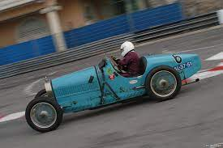
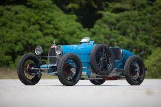
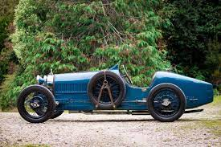
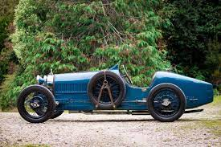
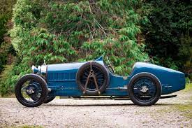
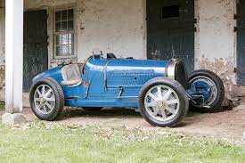
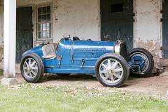

Type 2
Technika
Bemutató


Type 37
1926-ban a Bugatti elkészítette a Type 35 1,5 literes változatát a voiturette versenyzéshez.
Így a Type 37 folytatta az akkori breciai 13-as típusú szerepét.
Itt szerepelt ugyanaz az identitás és ugyanaz a tervezés, mint a sikeres Type 35, de sokkal alacsonyabb teljesítmény osztályban csak 60 lóerő volt elérhető.
A Type 35-höz képest a 37-es sokkal olcsóbb volt, és könnyebben karbantartható, így könnyebb választás volt a magánemberek vagy az amatőrök számára.
A Type 37 motorja lényegében fele volt az akkor használt inline-8 egységnek. Ez egy kompakt motorblokk volt, kis vízjáratokkal, alumínium ereszes panelekkel és háromszelepes hengerfejekkel.
Ezzel a kialakítás akár 5000 fordulat / perc is elérhető lehetett.
Ellentétben a Grand Prix autók, a Type 37 sima helyett görgős csapágyak használt, és volt főtengely.
A teljesítmény 60 lóerő volt. 1927-ben a Bugatti kiadta a Type 37A-t roots típusú kompresszorsal, amely 20 LE-vel növelte a teljesítményt.
A Type 35-höz hasonlóan a Type 37-nek is alacsony súlypontja, merev kormányzása és lenyűgöző fékezése volt.
Hátul is voltak jellegzetes fordított negyedelliptikus laprugók.
Az egyszerű kerékpáros sárvédőkkel felszerelt Type 37-et a korszak minden nagy országúti versenyén benevezték, beleértve a Le Mans-t, a Mille Migliát és a Targa Floriót.


 


Type 51
Története, adatok
Az eredeti Type 51 1931-ben jelent meg.
A motor egy 160 lóerős (119 kW) dupla felső kamerás evolúciója a kompresszoros 2,3 L egy felső bütykös inline-8-as található a Type 35B-ben.
Az 1931-es Francia Nagydíjon aratott győzelem ritka siker volt a vonalon.
Körülbelül 40 példát készítettek az 51-es és 51A típusból.
Az 51-es típus vizuálisan nagyon hasonlít a Type 35-re.
Az 51-es típus nyilvánvaló külső különbségei a következők: a kompresszor lefújó kimenete alacsonyabb a motorháztetőn a zsalugáteres részben;
egy darab öntött kerekek helyett csavarozott felnik;
dupla üzemanyag kupakok mögött a vezető, és végül a magneto.
Azonban sok Type 35 autók már felszerelt későbbi kerekek, így ez nem megbízható jel.
Képek


 

Type 57
Története, Adatok
Méretek
- Tengelytáv: 3302 mm
- Nyomtáv: 1349 mm
- Tömeg: 950 kg
Képek